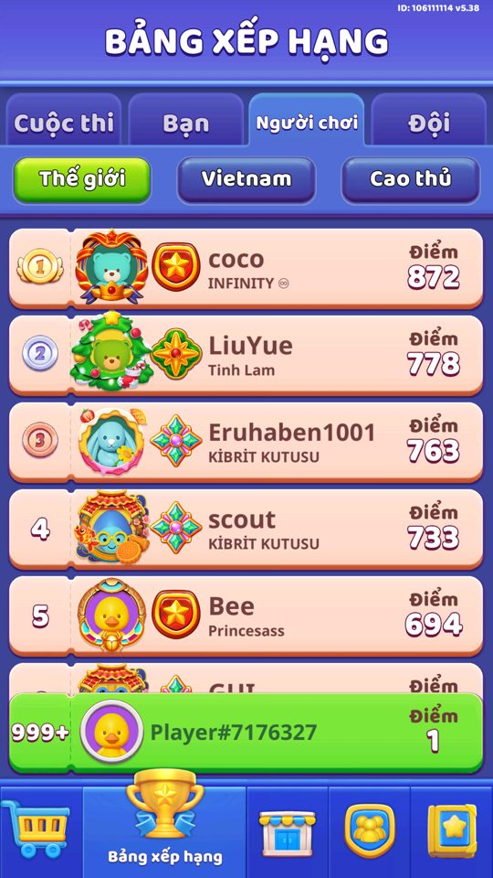

Ảnh chụp màn hình Cuộc thi hàng tuần cộng bảng Top người chơi và Top đội theo Thế giới / Quốc gia.
Mục lục
Mô tả Còn thiếu / chưa xác minh Mở khóa & điểm vào Cách hoạt động Ảnh chụp màn hình (1) Phần thưởng Số liệu chính Use case (6) Cấu hình (5) Backend / server Giao diện (UI) Storage keys Chưa đọc được / ghi chú Tính năng liên quan Nguồn đã đọc Mô tả Hai phần: Cuộc thi hàng tuần (có đồng hồ đếm ngược, thưởng theo hạng) và các bảng Top. Top người chơi và Top đội đều chia theo Thế giới và Quốc gia, cộng danh sách Master. Thứ hạng và điểm do server tính; client chỉ hiển thị dữ liệu trả về. Còn thiếu / chưa xác minh 📌 Phần thưởng cuộc thi lấy từ LeaderboardContestResourceSheet (server-tuned), không baked.
📌 timeContestEnd và điểm do server gửi; client tính thời gian còn lại bằng GetTimeSpanContestEnd().
Mở khóa & điểm vào LeaderboardController.IsUnlock() dựa trên LevelDataController.Level. Hằng số level_unlock_contest = 12 dành cho Cuộc thi hàng tuần.
Điểm vào:
Tab Leaderboard ở màn Home Tab phụ: Players / Teams, World / Country / Master Popup tổng kết thứ hạng (Rank settlement) khi cuộc thi kết thúc Cách hoạt động GetLeaderboardContest() hỏi server; GetLeaderboardContestFromServer() trả userContest, myRank, reset, timeContestEnd. Khi kết thúc, GetResourceValueTopContest(index) đọc bảng thưởng theo hạng rồi ClaimContestReward(). GetMasterUser()/GetMasterTeam() tải danh sách Master; TopUser*Data/TopTeam*Data là các trang dữ liệu top. Dữ liệu cache xóa khi đổi scene hoặc sang kỳ mới (ClearCache/ClearContestCache). Luồng chi tiết theo code Khi mở bảng xếp hạng, GetLeaderboardContest() hỏi server cuộc thi tuần; GetLeaderboardContestFromServer(userContest, myRank, reset, timeContestEnd) trả về danh sách người thi, thứ hạng của tôi và thời điểm kết thúc. GetTimeSpanContestEnd() tính thời gian còn lại. Khi cuộc thi kết thúc và người chơi đạt hạng thưởng, ClaimContestReward() gửi lệnh nhận; GetResourceValueTopContest(index) đọc bảng thưởng LeaderboardContestResourceSheet theo thứ hạng (giá trị do server). Ngoài cuộc thi, GetMasterUser()/GetMasterTeam() tải danh sách Master; TopUserWorldData/TopUserCountryData và TopTeamWorldData/TopTeamCountryData là các trang dữ liệu top người chơi và top đội theo phạm vi Thế giới/Quốc gia. Khi đăng nhập/đăng xuất (OnSignIn/OnSignOut) dữ liệu được cập nhật hoặc xóa. Dữ liệu lưu mã hóa theo khóa "leader_real".
Ảnh chụp màn hình (1) 1 ảnh chụp trong game (BlueStacks/LDPlayer, tài khoản cấp 4). Bấm ảnh để phóng to; nhãn UC dẫn tới use case tương ứng.

Bảng xếp hạng: tab Cuộc thi/Bạn/Người chơi/Đội; lọc Thế giới/Vietnam/Cao thủ; player hạng 999+ (có bot tên người) Phần thưởng Phần thưởng theo code Ngữ cảnh Phần thưởng Evidence Cuộc thi hàng tuần theo thứ hạng Giá trị do server (LeaderboardContestResourceSheet kiểu ResourceValue theo index hạng) LeaderboardController.GetResourceValueTopContest; LeaderboardContestResourceSheet
Use case (6) Bấm vào từng use case để mở. Mở/đóng tất cả
UC-01 Xem cuộc thi hàng tuần và thứ hạng của mìnhCác bước GetLeaderboardContest() gửi yêu cầu tới server GetLeaderboardContestFromServer(userContest, myRank, reset, timeContestEnd) nhận dữ liệu GetTimeSpanContestEnd() tính thời gian còn lại Actor Player Trigger Mở tab Leaderboard Điều kiện Đã mở khóa cuộc thi (màn 12) Kết quả Hiển thị danh sách người thi, thứ hạng (myRank) và đồng hồ đếm ngược Quy tắc / số liệu Mỗi tuần một kỳ; isResetContest báo kỳ mới; timeContestEnd là mốc kết thúc (ms) Evidence LeaderboardController.GetLeaderboardContest; LeaderboardController.GetLeaderboardContestFromServer; LeaderboardController.GetTimeSpanContestEnd
UC-02 Nhận thưởng cuộc thi theo thứ hạngCác bước GetResourceValueTopContest(index) đọc LeaderboardContestResourceSheet theo hạng ClaimContestReward() gửi lệnh nhận ClaimContestRewardFromServer(status) xác nhận Actor Player Trigger Cuộc thi kết thúc, đạt hạng có thưởng Điều kiện Có myRank đủ điều kiện Kết quả Người chơi nhận phần thưởng theo thứ hạng Quy tắc / số liệu Phần thưởng theo hạng lấy từ LeaderboardContestResourceSheet (ResourceValue), giá trị do server Evidence LeaderboardController.ClaimContestReward; LeaderboardController.GetResourceValueTopContest; LeaderboardContestResourceSheet.Get
UC-03 Xem Top người chơi Thế giới / Quốc giaCác bước GetMasterUser() tải danh sách Master TopUserWorldData / TopUserCountryData cung cấp dữ liệu phân trang GetMasterUserFromServer(masterUsers) cập nhật Actor Player Trigger Chuyển tab Players + World/Country Điều kiện - Kết quả Hiển thị bảng xếp hạng người chơi theo phạm vi Quy tắc / số liệu Dữ liệu top dạng GetDataByPage<UserInfoLeaderboard>; Master là danh sách riêng (LeaderboardMasterUser) Evidence LeaderboardController.GetMasterUser; LeaderboardController.TopUserWorldData; LeaderboardController.GetMasterUserFromServer
UC-04 Xem Top đội Thế giới / Quốc giaCác bước GetMasterTeam() tải danh sách đội Master TopTeamWorldData / TopTeamCountryData cung cấp dữ liệu GetMasterTeamFromServer(masterTeams) cập nhật Actor Player Trigger Chuyển tab Teams + World/Country Điều kiện - Kết quả Hiển thị bảng xếp hạng đội theo phạm vi Quy tắc / số liệu Dữ liệu dạng GetDataByPage<TeamInfoLeaderboard>; gắn teamCode của người chơi Evidence LeaderboardController.GetMasterTeam; LeaderboardController.TopTeamWorldData; LeaderboardController.GetMasterTeamFromServer
UC-05 Cuộc thi reset sang kỳ mớiCác bước UpdateDataFromServer(leaderboardData) nhận dữ liệu kỳ mới isResetContest = true báo kỳ mới ClearContestCache() xóa dữ liệu kỳ cũ Actor System Trigger Hết thời gian kỳ hiện tại Điều kiện timeContestEnd đã qua Kết quả Bảng xếp hạng làm mới, điểm về 0 cho kỳ mới Quy tắc / số liệu Chu kỳ tuần; dữ liệu cache xóa khi đổi scene hoặc reset Evidence LeaderboardController.UpdateDataFromServer; LeaderboardController.ClearContestCache; LeaderboardController.ClearCache
UC-06 Hướng dẫn Leaderboard lần đầuCác bước IsShowTut() kiểm tra trạng thái Hiển thị 3 bước hướng dẫn (leaderboard_contest_tut_0..2) ShowTutDone() đánh dấu và Save() Actor System Trigger Lần đầu mở bảng xếp hạng Điều kiện LeaderboardData.tutState chưa hoàn thành Kết quả Tutorial chỉ hiện một lần Quy tắc / số liệu Trạng thái lưu trong LeaderboardData.tutState theo khóa "leader_real" Evidence LeaderboardController.IsShowTut; LeaderboardController.ShowTutDone; LeaderboardData.tutState
Backend / server Command Chiều Mục đích GetLeaderboardContestclient→server lấy dữ liệu cuộc thi tuần ClaimContestRewardclient→server nhận thưởng cuộc thi GetMasterUser / GetMasterTeamclient→server lấy danh sách top Master *FromServer callbacksserver→client trả dữ liệu top, thứ hạng, thời gian và thưởng
Giao diện (UI) Element Class Mục đích Tab Leaderboard (Players/Teams, World/Country/Master) LeaderboardControllerxem thứ hạng Popup Rank settlement LeaderboardControllertổng kết và nhận thưởng cuối kỳ
Storage keys leader_real contest
Chưa đọc được / ghi chú Giá trị thưởng cuộc thi do server (LeaderboardContestResourceSheet), không có số cụ thể trong client. Công thức tính điểm thi và chu kỳ chính xác do server. Không spoof được level cao nên bảng xếp hạng đầy đủ chỉ mô tả từ code. Nguồn đã đọc features/LeaderboardController.md features/LeaderboardContestResourceSheet.md PseudoC/Assembly-CSharp/LeaderboardController.c facts/loc/terms.json